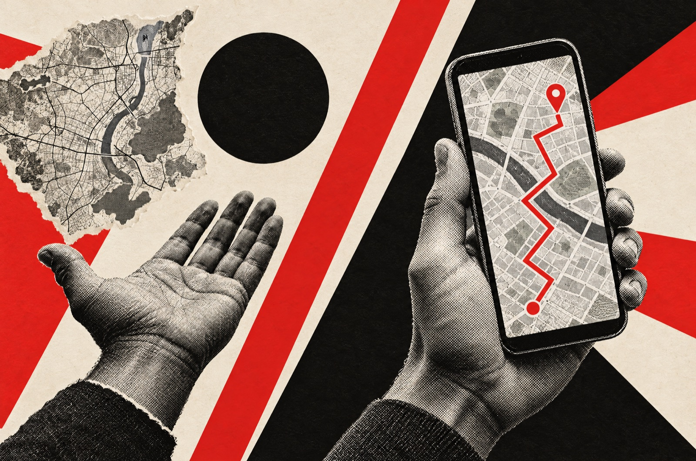
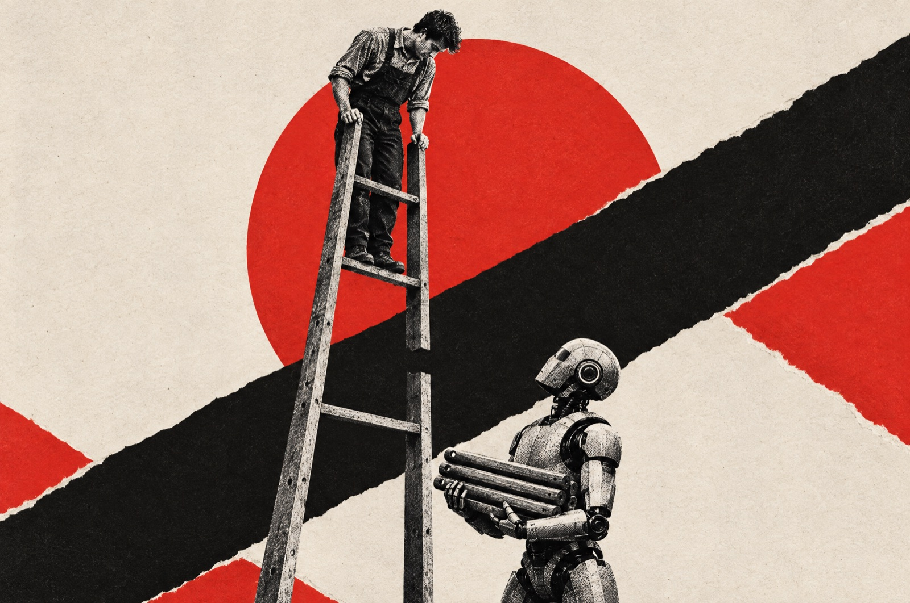

אחד עשר עקרונות לאנשי למידה ארגונית שרוצים להשתנות לפני שיעשו את זה במקומם. לכל עיקרון, מה אני חושב, מה המחקר אומר, ומה אני באמת עושה. גם כשהם לא מסכימים.
אבי לוי · מנהל צוות פיתוח למידה בארגון גדול ומרצה ב‑HIT
לפני כמה שבועות ישבתי שעתיים וחצי עם קולגה מהתחום שאני מאוד מעריך. בשלב מסוים שמעתי את עצמי אומר "עוד שלוש שנים אין תחום". ואז הבנתי שאני לא באמת יודע אם אני מאמין בזה, או שזה פחד שמדבר.
אז עשיתי משהו שאני מבקש מהסטודנטים שלי לעשות. עברתי על חצי שנה של עבודה, פגישות, פתקים וכלים שבניתי, ריאיינתי את עצמי בשלושה סבבים, ובדקתי כל עמדה מול כ‑180 מקורות.
גילוי נאות, אני לא חוקר. זו התחזית של מי שעומד באמצע השינוי, לא של מי שמסתכל עליו מבחוץ.
01
הלמידה לא נעלמת. הצורה הפורמלית שלה נעלמת.
המחקר מסייג הצורה מתכווצת, הביקוש גדל
הקול שלי
יש פה פרדוקס. עולם העבודה משתנה כל הזמן, וזה הופך את הלמידה לחשובה יותר מאי פעם. אבל הלמידה שהארגון מנהל, הקורסים והלומדות, כבר לא העיקר.
תחשבו על מתכנת שפותר באג. הוא לומד, ואף מחלקת הדרכה לא ניהלה את זה. מחלקת הלמידה שתישאר תהיה קטנה, צוות של אחד או שניים עם סוכנים, שעובדת על שגרות ועל הפיכת מקרים בודדים לתובנות של כל הארגון.
המחקרהנתונים מסכימים עם החצי הראשון
מה מתכווץ ומה גדל
הקורסים מתכווצים, אבל ההשקעה בלמידה לא. היא עוברת מבחוץ פנימה, ומהכיתה אל העבודה.
שעות הדרכה פורמליות לעובד בשנהATD 2025, 539 ארגונים
קודם
17.4
היום
13.7
−21%
הוצאה חציונית על למידה לעובדSHRM 2026, 4,600+ ארגונים
2025
$414
2026
$299
−28%
סך ההוצאה על הדרכה בארה״בTraining Magazine 2025
2024
$98B
2025
$102.8B
+4.9%
משרות מומחי הדרכה בארה״ב, תחזית ל‑2034BLS. 2024 מסומן כ‑100, כדי לראות את הצמיחה
2024
100
2034
111
+11%
85%
מהמעסיקים מתכננים להכשיר עובדים מחדש עד 2030 (WEF Future of Jobs 2025)
הצורה באמת מתכווצת. פחות שעות הדרכה (ATD) ופחות כסף לעובד (SHRM).
אבל SHRM עצמם מסבירים שהארגונים פשוט עושים יותר בעצמם וקונים פחות מבחוץ. שעות הלמידה לעובד לא ירדו.
והביקוש לא יורד. 85% מתכננים הכשרה מחדש (WEF), וההוצאה בארה״ב עלתה (Training Magazine).
מה שמשתנה זה איפה הלמידה קורית. 64% מהעובדים שואלים AI לפני שהם שואלים עמית (Accenture 2026).
בפועל
אני עובד ככה כבר עכשיו, ברוב הזמן כצוות של אחד עם סוכנים. וכל תיקון שחוזר על עצמו אני הופך לכלל קבוע, שזה בדיוק "להפוך מקרה לתובנה".
אבל בנינו המון דברים שעובדים, וכמעט שום דבר לא הפך לשגרה. צוות של אנשים וסוכנים קל לבנות וקשה להחזיק.
התחלתי ממחלקות הלמידה ידעכו לצוות של אחד או שניים
אחרי המחקר
מחלקת הלמידה מתכווצת, אבל הלמידה גדלה. מי שמחזיק רק את הקורס יתכווץ איתו. מי שמחזיק את השגרות, את הנתונים ואת התובנות, יקבל יותר מקום.
מה עושים מחרמצאו מקרה אחד שחוזר אצלכם, והפכו אותו לשגרה קבועה עם בעלים ברור. לתוכנית המלאה
02
הכלי יושב על העבודה, לא בקורס.
המחקר מסכים עם תנאי אחד חשוב
הקול שלי
יש מעבר לביצועים. יהיו כלים שיושבים על מערכות העבודה עצמן. מצד אחד, הם יתקנו בזמן אמת, למשל סוכן שמקשיב לשיחת שירות ומציע מה לומר.
מצד שני, הם יזהו טעויות שחוזרות על עצמן ויכולות שלא מספיק מחודדות, ואנחנו נעשה את ההתערבות המינימלית שצריך.

המחקרהכי מוכח, ועם הפתעה
ביצועים עם AI הם לא מיומנות בלי AI
AI מעלה ביצועים כל עוד הוא שם. כשהוא נלקח, חלק מהיכולת נעלם איתו.
15%יותר פריון לנציגי שירות כשהעוזר עובד איתםQJE 2025, 5,172 נציגים
−17%בציון המבחן אחרי שה‑AI נלקח מהתלמידיםPNAS 2025, כ‑1,000 תלמידים
ציון במבחן הבנה, מתוך 100Anthropic 2026, 52 מתכנתים
למדו ביד
67
עם AI
50
רופאים מנוסים, אחוז הממצאים שזיהו בלי הכליLancet 2025, שלושה חודשים עם AI
לפני
28.4%
אחרי
22.4%
עוזר AI בזמן אמת העלה את הפריון ב‑15%, והמתחילים הרוויחו הכי הרבה (QJE 2025).
כש‑AI נתן משוב למאמנים האנושיים של נציגים, זמן הטיפול ירד ב‑10% (IZA 2025).
מי שלמד עם AI ידע פחות כשבדקו אותו בלעדיו (Anthropic, PNAS, Lancet). תחשבו על ווייז. מגיעים מהר יותר, ואחרי שנה כבר לא זוכרים את הדרך.
באירופה אסור להסיק רגשות של עובד מקול או מפנים (EU AI Act, סעיף 5), ומ‑2 בדצמבר 2027 כל AI של העסקה בסיכון גבוה.
בפועל
ניתחתי עם "אנליסט" AI ב‑100 דולר בחודש 31,771 שורות של תשובות במבחן פערי ידע, ובניתי סוכן קולי שהופך את איתור הצרכים מתהליך שנתי לתהליך רציף. אבל מד הדופק החודשי שתכננו עוד לא יצא, והסוכן הקולי חיכה בצד.
התחלתי מכלים על העבודה יחליפו את הקורס
אחרי המחקר
הכלי יושב על העבודה ומשפר ביצועים בזמן אמת. אבל כל מערכת כזו צריכה גם חזרות בלי AI, אחרת אנחנו מייצרים עובדים שנראים מצוין עד שהכלי נופל.
מה עושים מחרעל כל כלי AI שנכנס לעבודה, הגדירו גם תרגול אחד שעושים בלעדיו. לתוכנית המלאה
03
הלב של המקצוע הוא אבחון, שגרות והוכחת השפעה.
המחקר מסייג הכיוון נכון, המוכנות חסרה
הקול שלי
ככל שהמידע בארגון יהיה מנוהל, אנשי הלמידה שיישארו יצטרכו לנתח אותו עם AI ולהוציא ממנו תובנות. לתכנן שגרות, לדאוג שמה שנלמד באמת מגיע לעבודה, ובעיקר להראות השפעה על הביצועים העסקיים.
זה לא מיתוג, זו בעיה מקצועית. הלקוח לא צריך להרגיש שאתה מקצועי, הוא צריך לפגוש מקצוען.
המחקרהכיוון נתמך חזק
מי שבנה מחדש את העבודה, ומי שלא מוכן לזה
מי שמרוויח מ‑AI שינה את העבודה עצמה. משאבי האנוש עוד לא שם.
ארגונים מצטיינים ב‑AI שבנו מחדש תהליכי עבודהMcKinsey 2026
~75%
כל שאר הארגוניםאותו סקר
~25%
מנהלי הון אנושי שמדרגים תכנון מחדש של תפקידים בעדיפות ראשונהWEF 2026
74%
ארגונים שהגדירו איזו עבודה עושה אדם ואיזו AIIBM 2026
26%
מי שמרוויח מ‑AI בנה מחדש את תהליכי העבודה (McKinsey 2026), ומנהלי ההון האנושי שמים תכנון מחדש לפני הכשרה (WEF 2026).
אבל משאבי האנוש עצמם לא מוכנים. 72% משתמשים מעט או בכלל לא ב‑AI בתוך משאבי האנוש (IBM 2026).
בפועל
בפרויקט אחד חקרנו שלושה חודשים את שורש הבעיה לפני שהצענו פתרון, ומצאנו שזו בכלל לא בעיית ידע אלא שינוי בתנאי השוק. אבל תחזיות כמו "עוד שלוש שנים אין תחום" אמרתי בלי שום נתון. דורש ראיות מאחרים, פחות מעצמי.
התחלתי מהלב של המקצוע הוא אבחון והוכחה
אחרי המחקר
המקצוע שנשאר הוא אבחון הבעיה העסקית מתוך נתונים, תכנון השגרות שסוגרות אותה, והוכחה שזה עבד. לפני שדורשים מקום ליד השולחן, צריך לבנות את היכולת הזו אצלנו.
מה עושים מחרהפנייה הבאה שמגיעה עוברת אבחון של עמוד אחד לפני שמציעים פתרון. לתוכנית המלאה
04
חמישה דברים שמפסיקים לעשות ב‑2027.
המחקר מסייג ארבעה מחזיקים, אחד צריך תיקון
הקול שלי
להפיק קורס כי ביקשו. כל פנייה מתחילה בשאלה איזה מספר עסקי צריך לזוז. למדוד השלמות ושביעות רצון. שביעות רצון פשוט לא מספיק חשובה. להחזיק את התוכן בעצמנו. בעלי הידע מעדכנים, סוכנים עונים. להיות שער לספקים. את הבעיה אנחנו מפצחים, הספק רק מבצע.
ולומדות רגולציה. במקומן קרא וחתום, ותשובה בזמן אמת מכלי AI כשלעובד יש דילמה אמיתית.
המחקרהחמישי צריך תיקון
כמה זמן מחזיק אפקט של הדרכת ציות
הדרכת ציות בווידאו לא שינתה התנהגות, ופרונטלית החזיקה כחודשיים (Park, על כ‑100,000 עובדים).
0אפקט מדיד להדרכה בווידאו על הפרותPark, HBS 2020
~2חודשים עד שהאפקט של הדרכה פרונטלית נעלםאותו מחקר
חודש 1חודש 12
שביעות רצון מודדת בעיקר אם אהבו את המרצה ואת השיחה עם האנשים בחדר, לא אם למדו (Sitzmann 2008). שאלה אחת על "כמה זה שימושי לעבודה שלי" דווקא שווה להשאיר.
להדרכת ציות בווידאו לא היה אפקט שאפשר למדוד (Park, HBS).
אבל רגולטורים לא יקבלו "קרא וחתום" לבד בתפקידים שיש עליהם פיקוח (DOJ 2024, FINRA 1240).
ותשובה של צ׳אטבוט היא אחריות של החברה. אייר קנדה חויבה לכבד מה שהבוט שלה אמר (ABA).
אין שום נתון על כמה פניות להדרכה נסגרות בלי מוצר למידה.
בפועל
הצבנו לעצמנו יעד שחלק מהפניות ייסגרו בלי מוצר. ועדיין, בסמסטר הראשון ב‑HIT הסטודנטים שלי בונים לומדה מלאה, וכמעט חצי מהשעות שלי בחודשיים האחרונים הלכו להפקת וידאו. אני משתכלל בדיוק במלאכה שאני אומר שהולכת להפוך לזולה.
התחלתי מלהחליף לומדות רגולציה בקרא וחתום
אחרי המחקר
מפסיקים את הלומדה השנתית הכללית. משאירים תרגול קצר לתפקידים בסיכון, ומוסיפים כלי AI שעונה ברגע שצריך, עם מקור לכל תשובה, תיעוד, והעברה לאדם כשהשאלה מסובכת.
מה עושים מחרעברו על הקטלוג ומחקו כל פריט שאין לו בעל עסקי שמוכן להגן עליו. לתוכנית המלאה
05
המנהל הוא המאמן, ו‑AI הוא המראה שלו.
המחקר מסכים על האימוןהמחקר חולק על מוטת השליטה
הקול שלי
המנהל ימשיך לאמן את העובדים שלו, ביכולות מסדר גבוה כמו קבלת החלטות, חשיבה ביקורתית ושיקול דעת. כדי שיספיק, צריך להוריד ממנו המון משימות, ו‑AI יהיה המראה שלו.
ועוד הימור אחד. מספר העובדים שיש לכל מנהל (מוטת השליטה) יקטן, כי הם יצטרכו לנהל צוותים של אנשים וסוכנים.
המחקראימון כן, צוותים קטנים לא
השיחה הקבועה היא מה שעושה את ההבדל
עובד שמקבל משוב משמעותי כל שבוע מחובר לעבודה פי כמעט שלושה (Gallup, 44,025 עובדים).
קיבלו משוב משמעותי בשבוע האחרון
7 מכל 10
כל השאר
1 מכל 4
כמה עובדים יש למנהל אחד, ומה אני מהמר
הנתונים הולכים הפוך מההימור שלי. לכל מנהל יש יותר עובדים, לא פחות.
10.9
12.1
פחות
20242025ההימור שלי
משוב שבועי קבוע הוא החומר הפעיל של מעורבות (Gallup).
אבל המנהלים טובעים. המעורבות שלהם ירדה ל‑22%, והם מבלים 40% מהזמן בעבודה של עובד מן השורה (Gallup).
ומוטת השליטה מתרחבת, ומנהלי משאבי אנוש מורידים שכבות ניהול (Gartner 2027).
מה שכן תומך במנגנון, סוכנים מעבירים לבני אדם את העבודה העמומה ואת השיפוט, ו‑AI דווקא הגביר את העומס (HBR 2026).
בפועל
זה העיקרון שאני הכי חי. בניתי לעצמי מערכת לניהול הצוות, ויש בה פתק אחד שנקרא "מה לשפר כמנהל". שני כללים מנחים אותה. AI אף פעם לא מדרג אנשים, והמערכת בנויה להתנגד לי, לא להסכים איתי.
ומה היא מצאה? שהתחייבתי לשגרת אחד על אחד ולא קיימתי. שלוש פעמים. מה שתיקן את זה לא היה עוד ידע, אלא זימון ביומן באותו יום.
התחלתי מהמנהל מאמן, והצוותים יקטנו
אחרי המחקר
המנהל הוא המאמן היומיומי, ו‑AI הוא המראה שמכינה אותו ומחזיקה אותו מחויב. ההימור שהצוותים יקטנו הוא נגד כל הנתונים הנוכחיים, ואני משאיר אותו כהימור.
מה עושים מחרעל כל תהליך, כתבו מה המנהל עושה בשבוע שאחריו, ובדקו שזה קרה. לתוכנית המלאה
06
הבעיה בגל הכשרות ה‑AI היא הסביבה, לא הקורס.
המחקר מסכים והבעלות החסרה כבר נמדדת
הקול שלי
יש היום גל ענק של קורסי AI, וחלק ממנו נועד בעיקר כדי שמחלקות ההדרכה ייראו רלוונטיות לשינוי. מהניסיון שלי, ההדרכה הזו לא עוברת למדדי פריון. אנשים לומדים AI כי זה ההייפ.
והשאלה הגדולה היא מי מוביל את השינוי. מחלקות הלמידה ומשאבי האנוש צריכות לתת את הטון, והן לא נותנות.
המחקרכולם משתמשים, מעטים משנים
הפער בין שימוש לבין שינוי
כמעט כולם כבר משתמשים ב‑AI. מה שחסר זה כל מה שמסביב. הנחיה, הכשרה ובעלות.
עובדי משרד שמשתמשים ב‑AI באופן קבועBCG 2026
74%
ארגונים שרואים השפעה כלשהי על הרווחMcKinsey 2026
37%
מנהלי HR ו‑IT שמבינים את השינוי באותה צורהGartner 2026
38%
עובדים שמרגישים שהוכשרו מספיקBCG 2026
36%
ארגונים שמסבירים מה עושים עם הזמן שהתפנהGartner, 114 מנהלי HR
7%
רק 38% ממנהלי משאבי האנוש וה‑IT מבינים באותה צורה איך AI משנה את העבודה (Gartner), וב‑46% מהארגונים לא מערבים את משאבי האנוש באסטרטגיית ה‑AI (IBM).
אבל "הדרכה לא עוברת" זה מוגזם. בממוצע הדרכה כן משנה התנהגות (Arthur 2003). אם היא מגיעה לעבודה תלוי בסביבה ובמנהל (Blume 2010).
סינגפור עושה את הסדר הנכון, מענק לתכנון מחדש של תפקידים לפני ולצד הכשרה (MOM).
אין אף מחקר שמקשר הכשרת AI לפריון מדוד. זו השאלה שהכי רציתי עליה תשובה.
בפועל
גם אני רוכב על הגל. בניתי קורס Claude Code של עשרה פרקים. אבל מה שהכי עובד אצלי זה "איך עושים את זה, צעד אחרי צעד". הסרטון של תשעת העקרונות קיבל 2,817 צפיות, ושורט שמראה יכולות קיבל 58. גם הקהל שלי רוצה לעשות, לא לדעת.
התחלתי מהדרכת AI לא עוברת לפריון
אחרי המחקר
הכשרת AI בלי תכנון מחדש של העבודה היא בזבוז. התפקיד שלנו הוא להוביל את השינוי בעבודה עצמה. ואם לא ניקח את הבעלות הזו, מישהו אחר כבר לוקח אותה.
מה עושים מחרשאלו את מי שמוביל את ה‑AI בארגון מה עושים עם הזמן שהתפנה, והציעו להוביל את התשובה. לתוכנית המלאה
07
אנשי למידה יאמנו גם סוכנים.
המחקר מסייג הצורך אמיתי, הבעלות לא שלנו
הקול שלי
בשלב הראשון, סוכנים ישבו על מערכות ניהול הלקוחות ויתקנו נציגים בזמן אמת. בשלב השני, הרבה משירות הלקוחות יעבור לסוכנים קוליים.
ואז אחד התפקידים שלנו יהיה לשפר את האיכות של הסוכנים האלה, לנתח טעויות, אולי עם סוכן משלנו שבודק אותם.
המחקרזה מקצוע, אבל לא בהכרח שלנו
כמה פעמים מומחה מסכים עם AI שבודק עבודה
גם כש‑AI בודק עבודה, מומחה לא מסכים איתו בערך פעם מכל שלוש (Szymanski, IUI 2025).
05064 עד 68100
1 מ‑4הנהלות שמסכימות מי אחראי על סוכני AIGartner, 297 מנהלי HR
20%ממנהלי השירות באמת צמצמו אנשים בגלל AIGartner, 321 מנהלי שירות
המסגרת של סינגפור לסוכני AI מפרטת בדיוק את המשימות שתיארתי, להכשיר מפקחים, למדוד כמה פעמים אדם עוקף סוכן, ולהחזיר את העקיפות לשיפור (IMDA 2026).
הערכת סוכנים היא עבודת שיפוט של מומחים (Anthropic). להגדיר מה זה ביצוע טוב ולנתח טעויות, זה ארגז הכלים שלנו.
אבל Gartner ו‑Microsoft נותנים את הפיקוח לתפעול ול‑IT, לא למשאבי אנוש.
והאוטומציה המלאה של השירות לא קורה כל כך מהר. חצי ממי שצמצם צפוי לחזור לגייס עד 2027 (Gartner).
בפועל
אני כבר עושה את זה כל יום. בניתי סוכן קולי בעברית ועברתי שלושה ספקי קול עד שהמבטא היה טוב. וכל הכללים והבדיקות שאני כותב לסוכנים שלי הם בדיוק "לאמן סוכן". אני עושה את זה לסוכנים טוב יותר ממה שמחלקות הדרכה עושות את זה לעובדים.
התחלתי מL&D תשפר את איכות הסוכנים
אחרי המחקר
אנשי למידה יעזרו להגדיר מה זה סוכן טוב, בזוג עם מומחה התוכן. זה לא יינתן לנו. צריך לבוא עם היכולת ולבקש את המקום.
מה עושים מחרשבו עם מומחה תוכן ונסחו יחד מה זו תשובה טובה של סוכן אחד שכבר עובד אצלכם. לתוכנית המלאה
08
מודדים את מה שהעסק מודד.
המחקר מסכים אבל אין עדיין מספר להשוואה
הקול שלי
המדד המשמעותי ביותר הוא השפעה עסקית מהירה יותר. צריך לראות שמשהו באמת נשאר לאורך זמן, ולשאול כמה מההחלטות שלנו נובעות מהבנה עסקית ולא מהרגל. המדידה שלנו צריכה לשבת איפה שהמידע העסקי יושב.
המחקרכמעט אף אחד לא מודד
מתוך 397 מדידות של הדרכה, כמה בדקו תוצאה עסקית
כמעט אף מחקר על הדרכה לא בדק אם היא הזיזה משהו בעסק (Arthur et al., 2003).
26 בדקו תוצאה עסקית371 בדקו תגובה, למידה או התנהגות
צוותי נתוני עובדים שמדווחים על שיפור מדיד בעסקInsight222 2025
52%
מנהלי HR שלא ראו ערך עסקי משמעותי מכלי ה‑AIGartner 2025
88%
רק 26 מתוך 397 מדידות בדקו תוצאה עסקית (Arthur 2003). זה פער ענק.
ההשפעה של הדרכה נעלמת מהר, ולכן "האם זה נשאר" הוא מדד חובה (Park).
אין שום סקר אמין שמודד כמה החלטות HR מבוססות נתונים.
בפועל
על התוכן שלי אני מודד הכל, קישורים מתויגים, דוח שבועי, לוח מדדים. ואני לא סומך על "הצלחה" של שום מערכת עד שאני רואה את זה עובד. אבל את אותה רמת מדידה עוד לא הצלחתי לבנות בתוך הארגון.
המחקר חיזק, הניסוח נשאר
שלושה מדדים לכל פונקציית למידה. כמה מהר העסק רואה השפעה. כמה מזה עדיין קיים אחרי שלושה חודשים. וכמה החלטות נשענו על מה שהוצאנו מהנתונים.
מה עושים מחרבחרו מדד אחד מעבר לשביעות רצון, וקבעו ביומן בדיקה חוזרת בעוד שלושה חודשים. לתוכנית המלאה
09
הג׳וניור של מחר מפקח על סוכנים. אבל רק אם נלמד אותו להבין.
המחקר מסייג הפרדוקס של הפיקוח
הקול שלי
התפקיד של האקדמיה בכלכלה החדשה חייב להשתנות. היא צריכה לתת כמה שיותר התנסות אמיתית כבר בזמן הלימודים, אחרת אין לה יותר משמעות.
והג׳וניור משתנה מהותית. הוא צריך יכולות של פיקוח, הערכה, איכות ושיקול דעת, כי הוא ינהל סוכנים מהיום הראשון.

המחקרנקודה עיוורת שמצאתי
שתי קריאות של אותה תקופה
הצעירים נלחצים, אבל עוד לא ברור כמה מזה בגלל AI. מה שכן ברור, המיומנות שהכי מבוקשת היא לפקח על AI.
−19%תעסוקת בני 22 עד 25 במקצועות חשופים ל‑AI, ביחס לצפויStanford 2026, תיאורי ולא סיבתי
מוגבלתפקיד ה‑AI בפער של הצעירים, עד עכשיוOECD 2026
52%מהמנהלים מתכננים לגייס יותר ג׳וניורים בגלל AIAccenture 2026, כוונות ולא גיוס בפועל
71%מהמנהלים מדרגים לפקח ולאמת פלט של AI כמיומנות מספר אחתIBM 2026
כדי לפקח על סוכן צריך לדעת לעשות את העבודה שלו, וזה מה שהסוכן מונע מג׳וניור ללמוד (Microsoft 2025). אצל מי שלמד עם AI, הפער הכי גדול היה בדיבאגינג, כלומר ביכולת לבדוק (Anthropic).
משימות הפיקוח וההערכה באמת עולות, ומנהלים מדרגים אותן ראשונות (IBM).
Gartner ממליצים על סימולציות ותרגול מודרך לג׳וניורים (Gartner 2026).
עוד אין ראיות שזה עובד אצל אלפי עובדים.
בפועל
ב‑HIT הסטודנטים מתרגלים מול עשר חברות פיקטיביות עם לקוחות AI, ובשנה השלישית מול לקוחות אמיתיים. בסמסטר השני הם נבחנים גם על יומן העבודה שלהם עם ה‑AI. ובסמסטר הראשון, בכוונה, בלי AI, כי אי אפשר לבקר תוצר של AI אם אף פעם לא ייצרת אותו. מסתבר שזה בדיוק מה שהמחקר אומר.
התחלתי מג׳וניור מנהל סוכנים מהיום הראשון
אחרי המחקר
הג׳וניור מפקח על סוכנים רק אם התפקיד מכריח אותו להבין. להסביר בקול מה הסוכן עשה, לתרגל בלי AI, לראות את ההיגיון ולא רק את התשובה. כמו אקדמיה בכדורגל, חזרות עם מאמן במקום עבודה שחורה שכבר לא קיימת.
מה עושים מחרבקשו מכל ג׳וניור להסביר בקול החלטה אחת של AI שהוא דחה, ולמה. לתוכנית המלאה
10
הדור הבא של המקצוע.
המחקר מסכים עם תזכורת חשובה
הקול שלי
את הדור הבא של אנשי הלמידה צריך ללמד נתונים, ניהול מוצר וניהול שינוי מהיום הראשון, ולהוציא את סטוריליין. וגם ללמד אותם לבדוק ולשפר את האיכות של סוכנים, כחלק מהמקצוע.
המחקריש לנו דרך ללכת
איך משאבי האנוש מדרגים את עצמם
משאבי האנוש מדרגים את עצמם נמוך בדיוק ביכולות שהעתיד דורש (IBM 2026, דירוג עצמי).
הבנה של AI
13%
מדידת ביצועים של AI
16%
ניהול שינוי
20%
מקור ההודעה לעיתונות בלבד. סינגפור, לעומת זאת, כבר מחליטה. מיולי 2028 ארגון עם יותר מ‑200 עובדים חייב איש משאבי אנוש מוסמך, והיעד הוא להכפיל את מספרם עד 2030.
אנשי HR מוסמכים בסינגפורMOM, יעד
היום
~9,000
2030
~18,000
תכנון תהליכי עבודה יהיה חשוב יותר ממיומנות בכלים, ורק אחת מכל 50 השקעות AI באמת משנה את העסק (Gartner, ב-HBR 2026).
הערכת סוכנים היא עבודה של מומחי תוכן, לא של בעלי תעודה בהדרכה (Anthropic).
אני שואל את עצמי כל סמסטר אם להפסיק ללמד סטוריליין. השנה הסמסטר השני כבר כולו AI וחשיבה מוצרית. התשובה הכנה היא שאני עוד באמצע המעבר.
התחלתי מסטוריליין יוצא, נתונים ומוצר נכנסים
אחרי המחקר
הדור הבא לומד לאבחן מנתונים, לבנות מוצר, להוביל שינוי ולהעריך סוכנים, בזוג עם מומחי תוכן. את המלאכה עצמה מלמדים כדי לפתח שיקול דעת, לא כמקצוע.
מה עושים מחרבחרו אחת מארבע המיומנויות בתוכנית העבודה, ותרגלו אותה על הפרויקט הבא שעל השולחן. לתוכנית המלאה
11
אנחנו אחראים על השינוי של אחרים. עכשיו אנחנו צריכים להוביל את השינוי של עצמנו, ולהפוך לבילדרים.
המחקר מסייג הבעלות כן, לבנות הכל לבד לא
הקול שלי
שנים אנחנו מלווים אחרים בשינוי. עכשיו מצופה מאיתנו לקחת את השינוי שלנו לידיים ולייצר אותו בעצמנו, במקום שהוא ייווצר עלינו.
אנשי למידה, וכל מי שעוסק בתחום, צריכים לבנות את האלטרנטיבה במקום לחכות שמישהו יבנה אותה בשבילם. להפוך לבילדרים, לחשוב כמו מנהלי מוצר, ולייצר את המוצרים והמיני מוצרים שיעזרו להם.
ככה אנחנו הופכים לבעלים של המוצר, במקום שמישהו טכנולוגי יבנה מוצר ויחליף אותנו.
המחקרהבעלות כן, הבנייה לבד פחות
מי מגיע לשימוש מלא, מי שבנה לבד או מי שבנה עם שותף
כלים שנבנו לבד הגיעו לשימוש מלא בחצי מהמקרים לעומת כלים שנבנו עם שותף (MIT NANDA 2025, דיווח עצמי).
אחוז הכלים שהגיעו לשימוש מלאלא עבר ביקורת עמיתים
עם שותף
~67%
בנייה לבד
~33%
92%מאנשי משאבי האנוש והלמידה שנשאלו אומרים ש‑AI מאחד את משאבי האנוש ואת הטכנולוגיהLinkedIn Talent Report 2026
$1.1Bש‑Workday שילמה על Sana, חברת למידה מבוססת AI. הטכנולוגיה כבר קונה את הלמידה2025
Gartner מזהים שצוותי משאבי אנוש מובילים מאמצים עקרונות של ניהול מוצר כדי להגיע לערך מהר יותר (Gartner 2027).
והסכנה אמיתית. מנהלי הטכנולוגיה כבר מקבלים אחריות על שינויים בכוח האדם שמעולם לא היו שלהם, ו‑Gartner מזהירים שמשאבי אנוש עלולים רק לתמוך בשינוי שהם היו אמורים להוביל (Gartner).
מה שעובד מגיע מהשטח. הארגונים שמצליחים לא מחכים לאישור מרכזי, הם נותנים לעובדים בשטח להוביל את השימוש (MIT NANDA).
אבל כלים שנבנו לבד הגיעו לשימוש מלא בערך בחצי מהמקרים לעומת כלים שנבנו עם שותף, ועובדים השתמשו בהם כמעט חצי פחות (MIT NANDA). הדוח מדגיש "שותפות, לא רק קנייה".
והיכולת עוד חסרה. צוותי משאבי אנוש מדרגים את עצמם 13% בהבנה של AI (IBM 2026), ו‑Gartner ו‑Microsoft נותנים את הפיקוח על סוכנים ל‑IT.
בפועל
זה אני. בניתי סוכן קולי לאיתור צרכים, אתר למידה מלא לקורס ב‑HIT, מערכת לניהול הצוות, סוכן פרודוקטיביות למנהלים, ומערכת סוכנים שמנהלת לי את העבודה.
אבל חלק גדול ממה שבנינו עומד בצד. כלי שבנית בסוף שבוע הוא לא מוצר שאתה הבעלים שלו. בעלות זה גם אימוץ, תחזוקה ומדד, וזה החלק שהכי קשה לי.
התחלתי מאנשי למידה צריכים לבנות את המוצרים בעצמם
אחרי המחקר
אנחנו מובילים את השינוי של עצמנו, ולא מחכים שייעשה עלינו. בונים לבד מוצרים קטנים כדי להבין ולהוכיח, ואז בונים או קונים יחד עם IT וספקים. ונשארים הבעלים של הבעיה, של המדד ושל האימוץ.
מה עושים מחרהובילו שינוי אחד בעבודה עצמה, לא רק את ההדרכה עליו, והיו הבעלים של המדד. לתוכנית המלאה
ההימור שלי על הקצב, ואיפה אני טועה
הקול שלי
רוב מחלקות הלמידה כמו שהן היום יצטמצמו מאוד עד 2029. שנתיים, אולי שלוש. הקצב יהיה שונה בין הייטק לבנקים ולמגזר הציבורי, אבל זה יגיע לכולם.
המחקרחולק
אף מקור לא צופה צמצום כזה עד 2029. ה‑OECD מתאר שינוי שקורה בעיקר בין דורות (OECD 2026), והלשכה האמריקאית לסטטיסטיקה צופה צמיחה של 11% במשרות מומחי הדרכה (BLS).
מהשטח הסימנים חדים יותר. צוותים שירדו מ‑15 ל‑3 (r/instructionaldesign), ותקציבים באירופה בלחץ שלא נראה מאז הקורונה (Fosway 2026). אבל אי אפשר להפריד שם בין AI לקיצוצים רגילים.
הלמידה עוברת לעבודהנתמך
כלים על העבודה משפרים ביצועיםנתמך עם סכנת שחיקה
אין בעלות על שינוי ה‑AIנתמך ונמדד
להפסיק למדוד שביעות רצוןנתמך
המנהל כמאמןנתמך
ג׳וניור מנהל סוכנים מהיום הראשוןפרדוקס הפיקוח
לומדות רגולציה רק עם קרא וחתוםלא יעבור רגולטור
אנשי למידה יאמנו סוכניםאף אחד לא נותן לנו
להפוך לבילדרים ולבנות הכל לבדבעלות כן, בנייה עם שותף
הדרכה לא עוברת לעבודהתלוי בסביבה
מוטת השליטה תצטמצםהנתונים הפוכים
רוב המחלקות יתכווצו מאוד עד 2029נשאר הימור
תוכנית העבודה מול השינוי
אף אחד לא יעשה את השינוי הזה בשבילנו. אלה הפעולות, לפי זמן ולפי תפקיד, ולכל אחת דרך לדעת שהיא באמת קרתה.
01החודש
הפנייה הבאה עוברת אבחון לפני פתרון. איזה מספר עסקי צריך לזוז, מה הסיבה, והאם זו בכלל בעיית למידה. איך יודעים · יש מסמך של עמוד אחד לפני כל מוצר · ארגז הכלים לאבחון · עיקרון 3
ספרו לאן הולך השבוע שלכם. כמה שעות להפקה, כמה לאבחון ולנתונים. איך יודעים · מספר אחד, ונקודת התחלה להשוואה · עיקרון 1
בחרו מדד אחד מעבר לשביעות רצון. וקבעו ביומן מתי בודקים אותו שוב. איך יודעים · יש תאריך ביומן לבדיקה אחרי 30 ו‑90 יום · עיקרון 8
שבו עם מי שמוביל את ה‑AI בארגון. שאלו מה עושים עם הזמן שהתפנה לעובדים. איך יודעים · יש לכם תפקיד מוגדר בתוכנית שלהם · עקרונות 6 ו‑11
מחקו מהקטלוג כל פריט בלי בעל עסקי. קבעו יעד מספרי למחיקה. איך יודעים · אחוז הקטלוג שנמחק, ואף אחד לא ביקש להחזיר · עיקרון 4
בקשו מהלמידה מספר עסקי לכל תוכנית. לא שעות ולא השלמות. איך יודעים · כל תוכנית חדשה מגיעה עם מספר ונקודת התחלה · עיקרון 8
למדו לאבחן לפני שאתם בונים. עברו על מקרה אחד מהבעיה ועד ההמלצה. איך יודעים · אבחון כתוב אחד, עם סיבה ועם הצעה שאיננה קורס · עיקרון 3
02הרבעון
סגרו לפחות פנייה אחת בלי מוצר למידה. ותעדו מה עשיתם במקום. איך יודעים · אחוז הפניות שנסגרו בלי מוצר. היעד שלי הוא 30% · עיקרון 4
הפכו מקרה חוזר לשגרה. תחקיר קבוע שמסתיים בכלל שנשאר, עם בעלים. איך יודעים · הכלל עדיין עובד אחרי חודש בלי שהזכרתם · עיקרון 1
תנו למנהל תפקיד בתהליך. על כל תהליך, מה המנהל עושה בשבוע שאחריו. איך יודעים · שיחות קבועות ומתועדות, לא סדנה למנהלים · עיקרון 5
תרגלו פעם בשבוע משימה בלי AI. ובדקו כמה אתם יודעים לבד. איך יודעים · אתם מסבירים בקול מה ה‑AI היה עושה ולמה · עקרונות 2 ו‑9
הגדירו שגרת צוות קבועה. סטטוס קצר, אחד על אחד כל שבועיים, ותחקיר אחרי כל פרויקט. איך יודעים · יש זימון ביומן, לא רק הסכמה בעל פה · עיקרון 5
היכנסו לחדר שבו מחליטים על אסטרטגיית AI. והגדירו מי אחראי על סוכני AI. איך יודעים · משאבי אנוש חתומים על התוכנית, לא רק מקבלים אותה · עיקרון 6
צברו התנסות אמיתית. פרויקט מול לקוח אמיתי, עם מספר שצריך לזוז. איך יודעים · יש לכם מקרה אחד מתועד מהבעיה ועד התוצאה · עיקרון 9
03עד סוף 2027
כל תהליך נמדד בהשפעה ובהחזקה. מה זז בעסק, ומה נשאר אחרי שלושה חודשים. איך יודעים · אין תהליך שנמדד רק בהשלמות · עיקרון 8
היו הבעלים של שינוי אחד בעבודה עצמה. לא רק של ההדרכה עליו. איך יודעים · אתם מחזיקים את המדד ואת האימוץ, לא רק את התוכן · עקרונות 6 ו‑11
השתתפו בהערכה של סוכן. עם מומחה תוכן, נסחו מה זו תשובה טובה ובדקו. איך יודעים · יש רשימת טעויות ושיפור שנמדד · עיקרון 7
שנו את התפקידים בצוות. אבחון ונתונים, ניהול שינוי, הערכת סוכנים. ובנו שותפות קבועה עם דאטה ו‑IT. איך יודעים · הגדרות תפקיד חדשות, ופרויקט משותף אחד שעובד · עקרונות 10 ו‑11
חברו נתוני למידה לנתוני ביצועים. עם כללי פרטיות כתובים. העובד רואה את עצמו, המנהל רואה את הצוות. איך יודעים · החלטה אחת על מעבר או קידום נשענה על הנתונים האלה · עיקרון 8
תכננו מחדש תפקידים לפני שמכשירים. איך יודעים · כל תוכנית הכשרה ל‑AI מגיעה אחרי מיפוי של העבודה · עיקרון 6
בנו תיק של מקרים, לא של תעודות. שלושה מקרים מתועדים, ובכל אחד גם מה דחיתם מה‑AI ולמה. איך יודעים · אפשר להציג אותם בראיון עבודה · עקרונות 9 ו‑10
ארבע המיומנויות שמחזיקות את התוכנית
אבחון מנתונים עם AI
לקרוא נתוני עסק, לנסח השערה ולבדוק אותה לפני שמציעים פתרון.
מתרגלים על כל פנייה שמגיעה. מתקדמים כשההשערה הראשונה שלכם נבדקת ולא רק מוצגת.
חשיבה מוצרית
להגדיר בעיה, משתמש, מדד הצלחה, ואת הגרסה הכי קטנה שמישהו ירגיש.
מתרגלים בכל פרויקט, בעמוד אחד שכתוב לפני שמתחילים. מתקדמים כשמישהו משתמש בזה פעם שנייה בלי שביקשתם.
ניהול שינוי ואימוץ
לגרום לשגרה להחזיק אחרי שההתלהבות עוברת.
מתרגלים על כל שינוי שאתם מכניסים. מתקדמים כשהשגרה עדיין קורית אחרי שלושה חודשים, גם כשאתם לא שם.
הערכת סוכנים ואימון
להגדיר מה זה ביצוע טוב, ולתת משוב שמשפר, לאנשים ולסוכנים.
מתרגלים עם מומחה תוכן על סוכן אחד. מתקדמים כשהרף שהגדרתם משנה את התוצאה.
אני עדיין לומד
ביוני עמדתי בוובינר ואמרתי שסוכנים מעצימים אותנו ולא מחליפים. בספטמבר כבר אמרתי שזה מפחיד אותי. באמצע לא הגיעו נתונים חדשים, רק שינויים מסביבי. ויש לי אינטרס, כי אני עצמי זז בדיוק לכיוון הזה.
הדבר הכי חשוב שלמדתי מהתרגיל הזה הוא שהבעיה שלי השנה אף פעם לא הייתה ידע או יכולת לבנות. הבעיה הייתה להחזיק דברים לאורך זמן. AI הפך את הבנייה לזולה. מה שנשאר יקר זה השינוי בהתנהגות, וזה התפקיד שלנו.